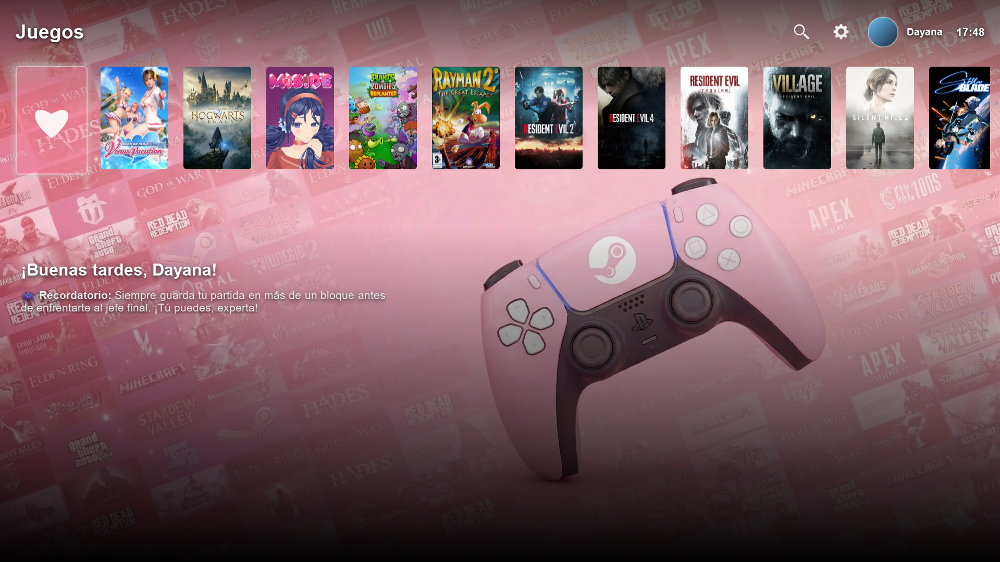
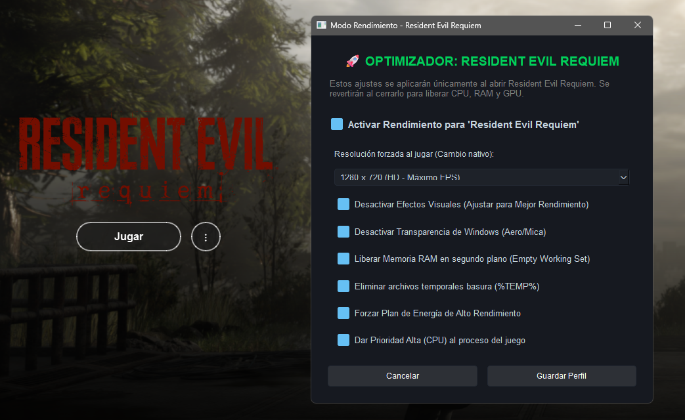
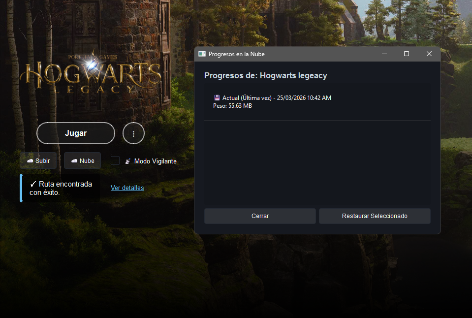

El orden de una consola.
El poder de tu PC.
Lyra Lazuli. Organiza tu biblioteca, optimiza el rendimiento de tu equipo con un clic y respalda tu progreso en la nube de forma automática. Diseñado para que simplemente disfrutes.
Interfaz Inmersiva
Navega con ratón o mando. Tu PC se transforma en un centro de entretenimiento elegante, sin distracciones del escritorio ni configuraciones complejas.
Ventajas Clave:
- Acceso unificado a todas tus aplicaciones y juegos.
- Diseñado para pantallas grandes y uso a distancia.


Optimización Dinámica
Acelera tu PC al instante. El software suspende tareas pesadas de fondo de forma segura para darte el máximo rendimiento cuando lo necesitas, y cuenta con un botón de reversión en tiempo real.
Ventajas Clave:
- Liberación de memoria RAM automática.
- Seguridad total: vuelve al estado original con un clic.
Guarda todo en la Nube
No importa si el título es de una tienda oficial o un instalador independiente. Detectamos tus partidas locales automáticamente y las respaldamos de forma privada.
Ventajas Clave:
- Sincronización silenciosa y automática en segundo plano.
- Tu progreso siempre a salvo frente a fallos del sistema.
